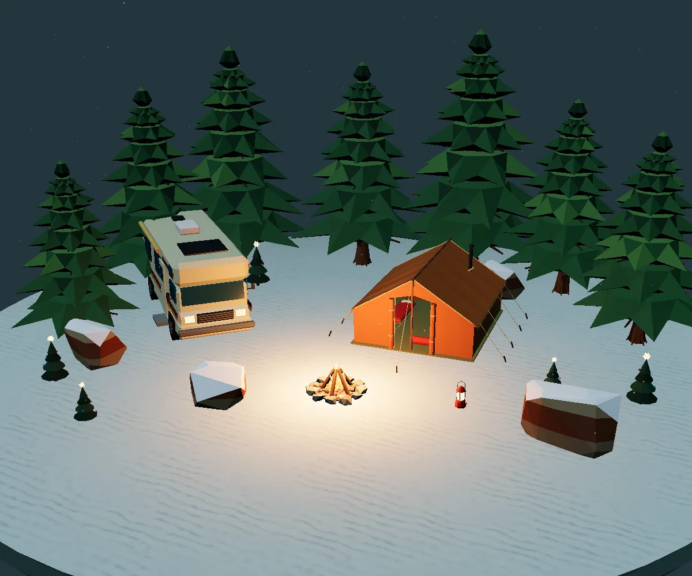
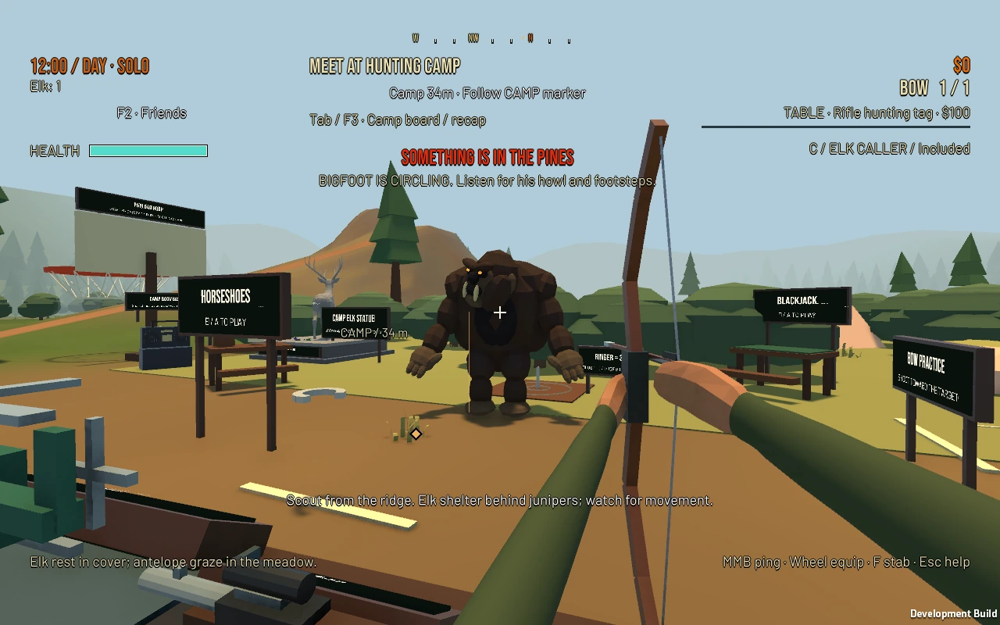
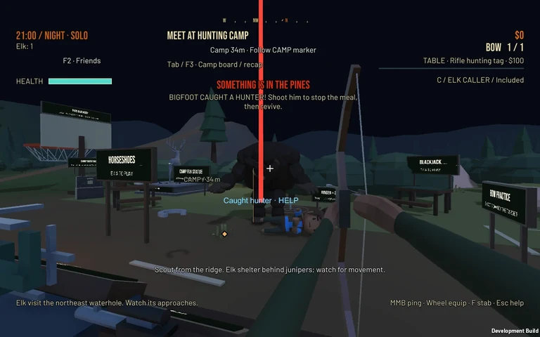

Follow the campaign.
Normal mode takes the hunt through forest, snow and fire, with its finale rendered in the game scene.
See actual game capturesTWO BROTHERS. ONE WILD IDEA.
Deep in the pines, a good plan only gets you so far.
We're two brothers building the co-op hunting game we want to play with our friends. Explore forest, snow and fire, where a quiet hunt can escalate into pure chaos.
IN DEVELOPMENT PC · Steam Deck support unverified

THE GAME WE'RE BUILDING
A hunt to follow. A camp to come back to. A world that doesn't always play along. Features, balance and presentation are still evolving.
Normal mode takes the hunt through forest, snow and fire, with its finale rendered in the game scene.
See actual game capturesZombie mode uses finite, increasing enemy-budget rounds. Start with a bow, earn permanent equipment and keep surviving. There is no win, nuke or finale.
Follow developmentMake camp your base with hunter profiles, equipment and activities between hunts. Cooperative play is still being tested.
Read about testing accessREAL GAME. WORK IN PROGRESS.
These earlier in-game encounters keep the full game frame and HUD. They're separate from the interactive art above. Select a capture to see it at full size.

A daylight encounter at camp. Earlier work-in-progress gameplay.
An earlier staged UFO encounter with the original HUD.

An earlier staged nighttime rescue. This solo capture does not establish multiplayer.
Still images do not establish multiplayer, performance or final-game readiness. Visuals and features may change.
JOIN US OUT THERE
Work-in-progress testing, shared one request at a time.
Playtest builds are shared through a restricted Google Drive folder. Sign in with your Google account, open the folder and request access. Access requires owner approval and is granted individually.
Request playtest access on Google DriveThe current verified private Windows playtest candidate is Build81. It adds an American flag at camp, a larger Normal-mode map, clearer Zombie area cues, and visual updates. Local automated checks have passed; human play, hardware, and separate-PC online testing remain open.
Donations are voluntary and independent of playtest access; donating does not guarantee approval or a copy of the finished game.
SMALL TEAM. STILL BUILDING.
We're working on clearer encounters, camp activities and cooperative hunts. Everyday play, separate-PC multiplayer, controller support, Steam Deck compatibility and sustained performance still need testing.
PC and Steam Deck are our initial targets. Steam Deck support is not verified. An iOS version is a later aspiration.
We're aiming for the Steam Winter Sale if progress, readiness and approvals allow. There is no guaranteed release date.
Follow the roadmap